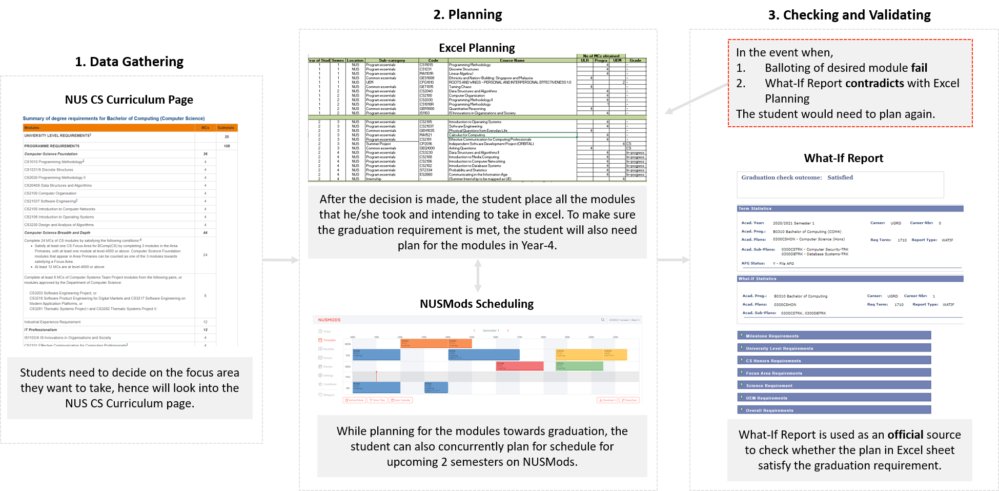

ModAhead
ModAhead is for Computer Science students in National University of Singapore (NUS) who want to plan their modules
ahead of time and towards graduation. The current workflow require students to use a combination of Excel sheet, NUSMods,
What-if Report and the NUS Computer Science course curriculum page. As such, the process of planning towards graduation often
require students to switch between these tools, making the planning very tedious and error prone.
Through the design of ModAhead, we hope to improve the experience of CS students doing long term planning of their
modules by integrating the functionalities of the current tools used so that they can be rest assured that they
are on track towards graduation.
Project Overview
Context
CS3240 Interaction Design
AY2021 Semester 1
Project Team 3
Team
Chiang Jiajun Jared
Koh Jun Wei
Ng Wen Jun, Felix
Ong Choon Han
Process
User Study
Initial Prototype
Expert Review
Hifi Prototype
User Test
Final Prototype
User Study
User Identification
The targeted user group for this project is chosen to be Computer Science (CS) students from NUS. This group of students
are being selected due to the flexibility of scheduling. This flexibility arises from the fact that CS students in NUS can
choose from a total of 10 focus areas. This wide range of focus area means that there are a lot of ways for a student to plan
and schedule their curriculum. Therefore, making it a good precursor towards a more general module planner.
By focusing on CS students in NUS, we aim to provide a personalized user experience that is representative of the academic
planning decisions a CS student would take in their course of study in NUS.
Methodology of Study
In order to gain insights on the different workflows and pain points that the students may have in scheduling, we decided to
conduct surveys and interviews. The online survey will serve as an efficient method to provide us with as many responses as
possible. This is helpful as we need to find out how different students with different focus areas plan their modules and what
are the considerations they usually take while doing so. Through the survey, we identified the interesting submissions and conducted
online interview on them. The additional use of interviews can help fill the gaps that the questionnaires leave, since it is not
possible to get deep insight solely using questionnaires.
In total, we have collected 20 responses for the online survey. Among the 20 responses, 16 are Year-3 students while 4 are Year-4 students.
For the interviews, there are a total of 5 online interviews conducted. Among the 5 interviewees, 4 are Year-3 students while 1 is Year-4 student.
Insights
Through the survey and interviews, we have come up with an overview of problems and tools that the students would usually use.
In addition, we have also gained a better understanding of the planning habits of CS students in NUS.
Persona
This persona created base on the surveys and interviews being conducted. It is a generic persona that will be helpful in creating
ModAhead as it can help us uncover the common the pain points that CS students faces in NUS while planning for graduation.

General Workflow
For the identified persona, we came up with a workflow that students would usually take when it comes to module planning towards graduation.
This workflow is separated into 3 phases which starts from “Gathering Data”, “Planning” and lastly “Checking and Validating”.
The general pain points are as follows:
- There is no integrated tool for facilitate the 3 phases of the workflow.
- Students constantly needing to switch between different phases and tools.
- In an unfortunate event when the planned schedule is not possible, will be very tedious and frustrating to plan again.

Initial Prototype
Initial Prototype 1
The idea in which this prototype is built upon is based on allowing students to choose the modules that they want to take and place them on
the “Module Basket” first before adding them into the schedule. This step by step process will reduce the student’s cognitive load at each
stage as the student will only need to worry about 1 thing in each process. What the UI aim to achieve is that in the event when the desired
module is deemed not fit for the schedulable, it is supposed to facilitate the changing of modules easily. With the above idea in mind, we came
up with the following prototype.
By clicking on the “What is left” button, a modal with the remaining module that the student needs to take will appear. The student then chooses
those modules that he or she is missing. These chosen modules will then be added into the “Module Basket” where the student will then schedule them.
User Test
Evaluation Plan
Our User Testing involves a total of 5 participants that tested our Hi - Fi prototype individually over an online meeting.
The participants were asked to carry out tasks using the prototype that was presented to them. Whilst performing these tasks, they were encouraged to think aloud and voice out any opinions and thoughts that they had.
After conducting the user testing, we had the participants answer a few questionaires regarding the prototype, as well as logged any interesting details that we could find while watching the recordings of the user testing.
Findings
Below is a list of points that our team came up with after discussing the logs and questionaires that we obtained through the user testing:
- The "+" icon that was intended for adding special terms in our schedule planner was often mistaken for adding modules to the schedule.
- The search function for finding modules was more often used for adding modules compared to the panel of modules that were presented to the user.
- After cloning a schedule, users found it hard to differentiate between the schedules that they have created.
- The error descriptions that surfaced when hovering above certain modules were not informative enough.
- Users found that the functionality of cloning schedules being accessible from a settings icon was not very intuitive.
- There was no visible system status that indicated a successful cloning of schedules.
- Users found it hard to tell what portion of the main page represented a "Schedule".
Improvements to Hi - Fi Prototype
Using the list of findings that we gathered from User Testing, our team implemented a list of changes to the Hi - Fi Prototype in order to solve the problems that we had found, which would be explained more in the Final Prototype section below.
{kind=link}
{kind=link}
{kind=link}